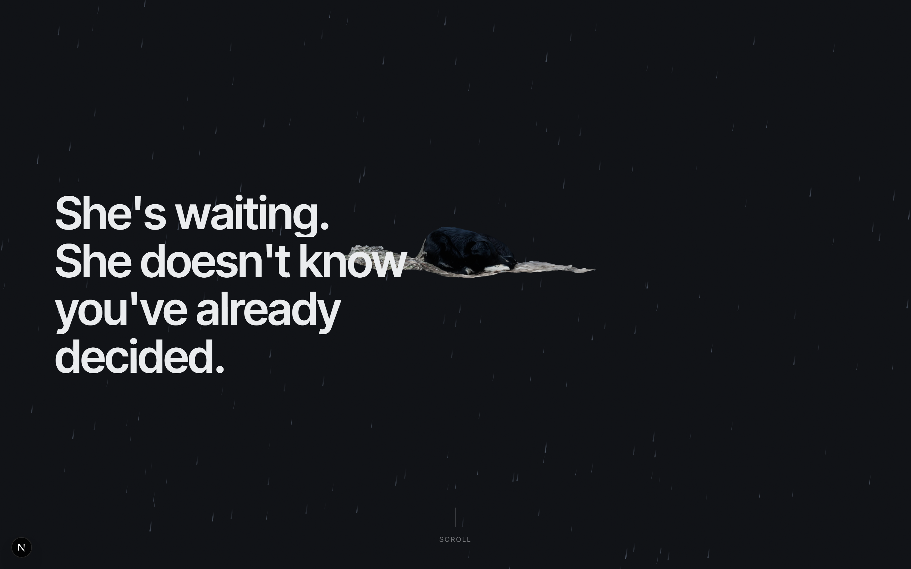
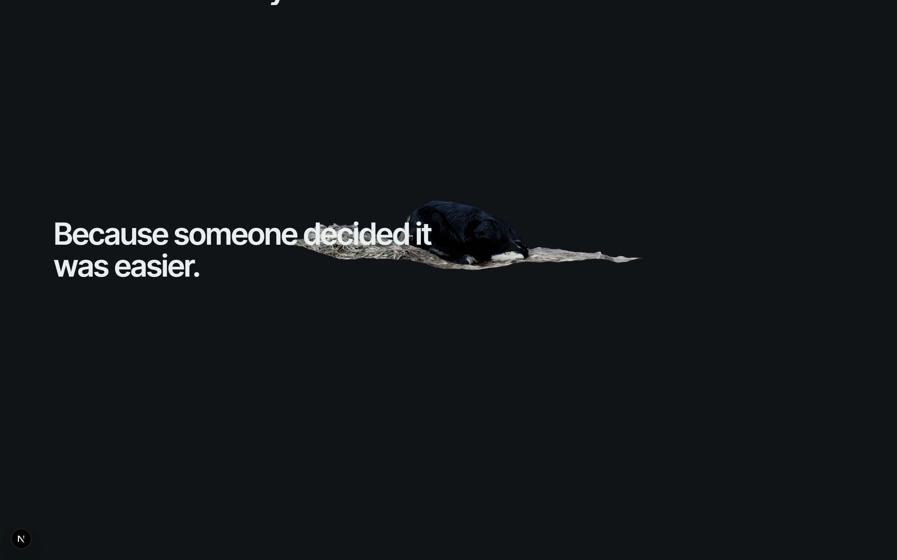
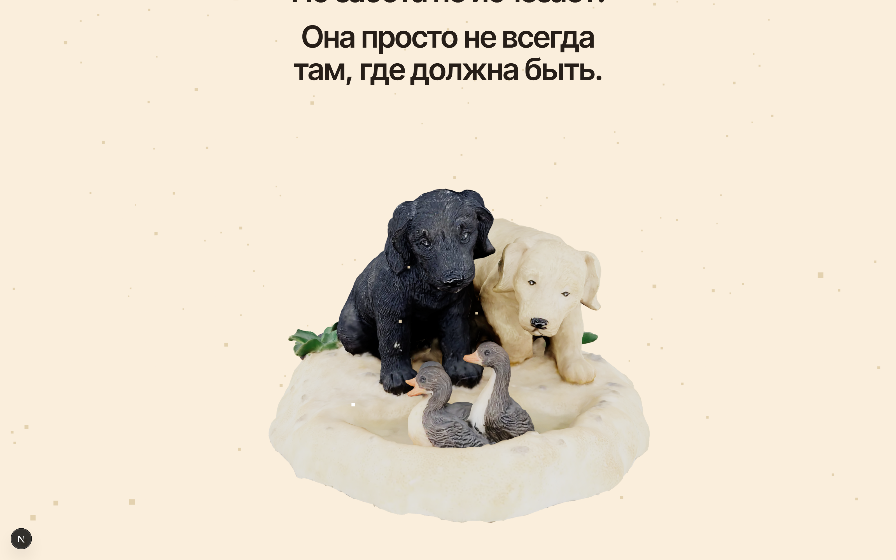
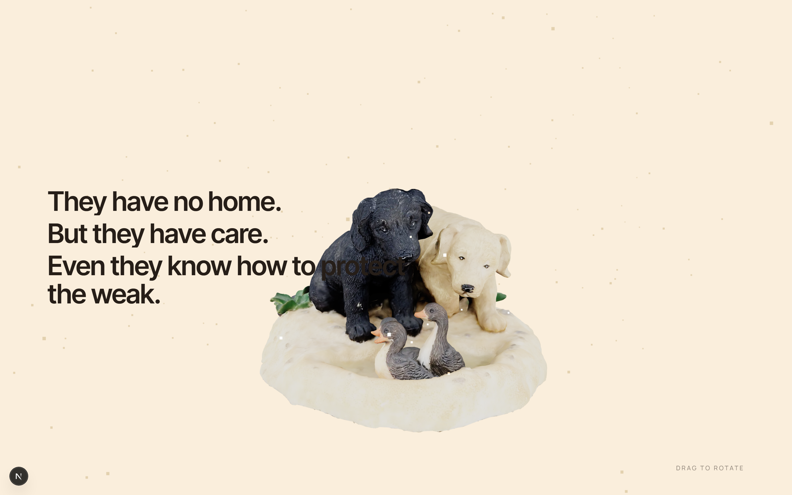
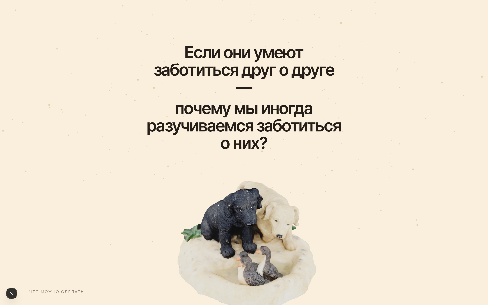
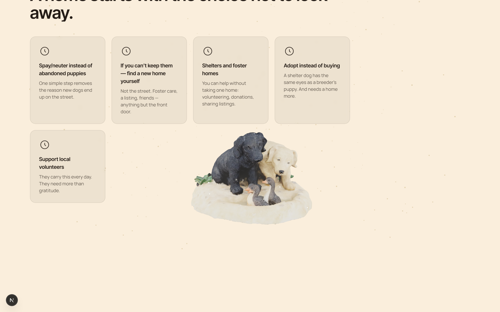
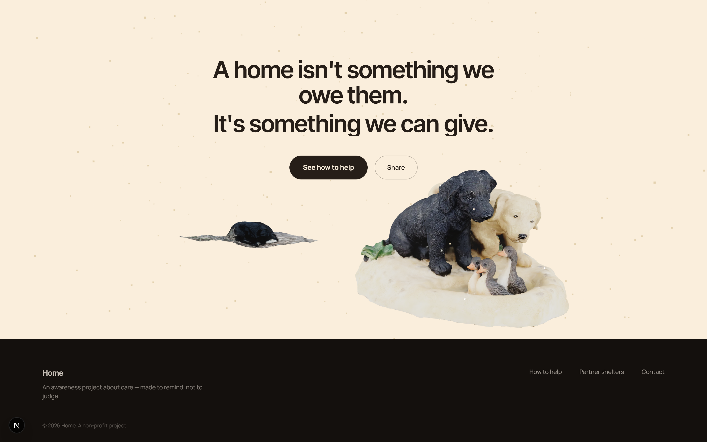

If even those without a home are capable of care — why is it sometimes missing in those who have one? A scroll-driven journey from a cold, rain-lit street to a warm home, told through two 3D dog models in one persistent WebGL scene.
Concept
"If even those without a home are capable of care — why is it sometimes missing in those who have one?"
The scroll is the journey. It opens on a lone dog in the rain — graphite and steel tones, a light film grain, asphalt under rain. As you scroll, the palette, light, and scene warm up into a home, and a second model takes over: two dogs gently watching over a chick. Not pressure through facts — just a quiet contrast.







One persistent WebGL scene runs the whole site — camera, light, the
crossfade between the two models, and particles (rain → warm dust)
are all driven by a single "director" that reads the current
section's scroll progress every frame. Models are compressed via
@gltf-transform/cli: one file shrunk from 19.9MB to
1.0MB with no visible loss in the 3D viewport.